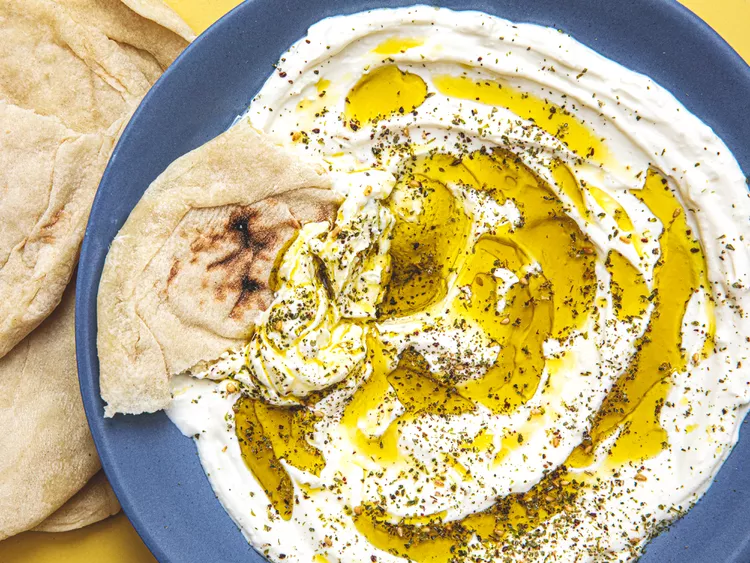

Labneh

This strained and lightly salted Middle Eastern yogurt is often served at breakfast or as a snack drizzled with olive oil, sprinkled with za’atar, and scooped up with pita bread.
Labneh was something my Palestinian mom has always eaten regularly with fervor, often serving it as a makeshift dinner alongside other simple dishes like sauteed tomatoes, hummus, and scrambled eggs when we didn’t really feel like cooking. But while I grew up eating labneh, it took time for my own appreciation to grow because as a kid, I hated it.
Ingredients
- 1/2 gallon milk
- 2tbsp yogurt
- Kosher salt
Steps
- In a medium saucepan or saucier, heat milk gently over medium heat until it reaches 180°F (82°C) on an instant-read thermometer. Keep the milk between 180 and 190°F (82 to 88°C) for at least 10 minutes and up to 30 minutes (how long you hold the milk at this temperature will change how much water steams off and how concentrated the milk proteins and fats end up, changing the final texture of the yogurt; there's no one right way to do it).
- Allow the milk to cool to about 110°F (43°C). In a small bowl, stir together the yogurt with a few spoonfuls of the warm milk, then scrape the yogurt mixture into the pot of lukewarm milk. Stir well to distribute the yogurt culture.
- Transfer the cultured milk to glass jars, the vessels of a yogurt maker, an Indian clay yogurt pot, or whatever incubating device you may have, such as a slow cooker or Instant Pot.
- Cover the jars and keep warm; how you do this depends on what you have at home. You can submerge the jars up to their necks in the temperature-controlled water of an immersion circulator (set to 110°F or the incubation temperature of your choosing); place them in a turned-off oven with the light switched on; wrap them in kitchen towels and hold them in a warm place; submerge them in 110°F water held in a cooler; use a yogurt maker, etc.
- How long it takes the yogurt to set will depend on the temperature at which it is held. This can be as short as 3 or 4 hours and as long as 18 hours. Once the yogurt has set, allow it to sit out at room temperature for up to an additional 12 hours to ensure a strong culture; if you're working with a culture you know well, you may not need to let it sit out for so long, especially if you don't want it to grow too sour. There's no one good rule here except to give the yogurt the time it needs to sour and thicken properly.
- Line a fine-mesh strainer with cheesecloth or a large coffee filter and set it over a large bowl. Spoon the yogurt into the prepared strainer, transfer to the refrigerator, and allow the whey to drip out until the yogurt has thickened to your desired level, about 24 hours (labneh should be thicker than Greek yogurt). You should have about 2 1/2 to 3 cups strained yogurt at this point (you can drink the drained whey or use it in some baked goods or other preparations.)
- Transfer strained yogurt to a mixing bowl and stir in 1/2 teaspoon salt until evenly distributed, then taste and add additional salt, if desired (labneh should be noticeably seasoned but not taste strongly salted). Transfer the labneh to an airtight container and keep refrigerated.